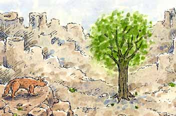
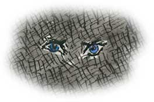
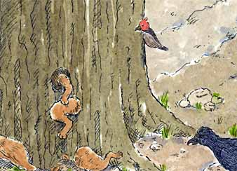
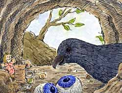
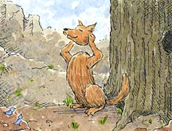
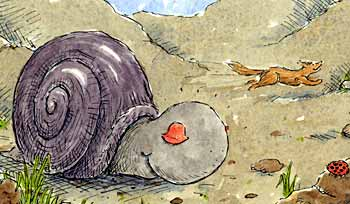
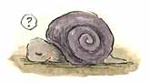

|
|
| Home | Author Bio | Artist Bio | |
| by Storie-Jean Agapith | ||
| Dedication: This story is dedicated to my wonderful son, Leon W. Weed, 1971-1997; he was my inspiration for telling stories. I will always love my beloved and only child, and with each story I will have wonderful memories of when I told them to him. | ||
| Illustrated by Michael S. Weber | ||
|

 The tree opened up so that Mr. Coyote could go inside to rest, then it closed to keep him safe. Mr. Coyote slept for hours. When he woke up he could not remember what he had said to make the tree open. He said, "Let me out Mr. Tree", but nothing happened. He said, "Please let me out now!" and again nothing happened. The tree didn't even creak. Mr. Coyote knocked on the tree, but it would not open up. Mr. Tree was upset with Mr. Coyote for not having said please the first time he spoke to the tree! It let him rest a little longer. Because the birds heard Mr. Coyote banging on the inside of the tree, they came down to peck on the tree to help get him out. But they were too small and the tree was just too big! Finally Mr. Woodpecker came down and pecked a hole in the tree. Although it was a very small hole, it caused Mr. Woodpecker to get a bent beak! This meant he couldn't peck on the tree any more. Mr. Coyote put one hand out the hole but he could not fit through. He then tried his leg but still he could not fit through. He had to come up with a way to escape since Mr. Woodpecker's beak was now bent. Mr. Coyote knew there had to be a way. "Ah, come on you old ugly tree," he cried, "Just let me out!" But still nothing happened, just the silence around him.  Mr. Coyote decided to take off his arms one at a time and put them through the small hole. He then put his legs through one at a time by taking them off. He put his body through by taking it off. This was working out fine. I'll show you Mr. Tree, you can't keep me in here, he thought.
Next Mr. Coyote tried to put his head through the hole, but it was too big. His ears were in the way. So he took off his ears and put them through the hole. He again tried his head, but his eyes were too big. Mr. Coyote took his eyes off and put them through the hole.

Mr. Raven saw the eyes and flew down to take them. Then Mr. Raven flew back up high in the tree with Mr. Coyote's eyes. They were such beautiful eyes, blue like the sky, and would be a treasure to put in his hiding spot!  Mr. Coyote finally put his head through the hole. He then put himself back together. One piece at a time he became a whole coyote again. But after he put his head on he could not find his eyes. He was feeling all over. His ears were listening to hear him touch his eyes, but not a sound could be heard from his eyes. His fingers were being careful while feeling around, but still no eyes were found.
Mr. Coyote knew he could not let the animals know he was blind. He felt his way to a wild rose bush; he then put two rose petals in for his eyes. This would cover the blindness for a little while, but he would have to keep looking for his eyes. Surely they were close by!  Along came Mr. Snail who saw Mr. Coyote with the rose petals in his eyes. He asked Mr. Coyote, "Why do you have those rose petals in your eyes?" Mr. Coyote said, "Because they are very beautiful. They have lovely colors. You can try them if you want and I will hold your eyes." Mr. Snail took off his eyes. He put them into Mr. Coyote's hands and tried the rose petals in his eyes. Then Mr. Coyote put Mr. Snail's eyes into his head and ran off with his long tail wagging. To this day Mr. Snail is crawling with his head down looking for his eyes. And all coyotes have brown eyes instead of blue; this is because Mr. Coyote was naughty when he took Mr. Snail's eyes. And Mr. Raven still has those beautiful blue eyes in his secret hiding place, but he cannot return them because the secret hiding place was so secret not even Mr. Raven can find it!  |
||
| Back to Children's Storybooks Online | ||
| Story copyright ©2003 Storie-Jean Agapith. All rights reserved. Illustrations copyright ©2003 Carol Moore. All rights reserved. No part of this book may be reproduced or transmitted in any form or by any process without prior written permission from the publisher. 1st Edition. Published by Carol Moore 041907415 |